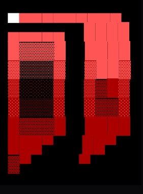

Randomized configurations
Instead of everyone working with the same configuration, Enkripto can generate a different one for each setup. The large configuration space makes identical configurations highly unlikely.

ENKRIPTO DOCUMENTATIONEnkripto is a randomized encryption system built around individually generated encryption configurations, transferable seed data, and its own command language.
Enkripto is designed around the idea that encryption should not rely on one shared configuration. During initialization, Enkripto can generate an individual seed and library for a setup. The resulting configuration can then be used for encryption and decoding.
Instead of everyone working with the same configuration, Enkripto can generate a different one for each setup. The large configuration space makes identical configurations highly unlikely.
The seed is a compact representation that lets Enkripto recreate the required configuration later. The configuration itself does not need to be transferred directly.
Note: This page explains the public concept and workflow. Internal generation and reconstruction details are intentionally not documented here.
The basic workflow is simple: initialize a configuration, use it to process a message, and save the seed data when you need to reproduce or transfer the setup. Because createNew defaults to True, a new setup can be started with just init.
Use init or initiate to start the library and seed creation/import process.
Pass a message to encrypt or encode.
Use decipher or decode with the same configuration.
Use save or write to store the current seed data in an .enk file.
> init [+] initialization complete > encrypt msg=Hello World [+] message encrypted > decipher msg=<encrypted-message> [+] message decoded
As an informal experiment, an AI model was given an Enkripto seed in both its raw and packed forms, together with an encrypted message. The model was explicitly told that the data was a seed, which version was packed, and which piece of data was the message.
Even with that information — far more context than an ordinary third party would have — the model could not determine how to reconstruct the required configuration or decipher the message.
What this demonstrates: The experiment illustrates how difficult the data can be to interpret without the Enkripto system itself. It is an informal demonstration, not a mathematical proof of security or an independent cryptographic audit.
Enkripto can store a small set of startup preferences in preferences.json. These preferences control how initialization behaves the next time you use the program.
The current persistent preferences are createNew, readFromENK, and fileLocation.
If no saved preference overrides them, Enkripto starts with createNew=True, readFromENK=False, and fileLocation=Default.enk.
# Example preferences { "createNew" : True, "readFromENK": False, "fileLocation": "Default.txt" } # Because createNew defaults to True: > init
Important: Preferences and seed data are separate. preferences.json stores startup settings; seed data is handled separately through the save/import workflow.
Use restoredefaults, defaults, or default to restore the default parameter values.
A seed is a set of numeric values that allows Enkripto to recreate a library without directly transferring that library. This makes seed data compact and convenient to store or transfer.
Raw seeds are compact numeric data. They are convenient when copying a seed directly and have a recognizable structure.
A packed seed uses an additional packing step, producing a less immediately recognizable representation. Packed data is longer but can be convenient for sharing through a text file.
A library represents the generated encryption configuration used by Enkripto for its processing operations. Users generally work with the seed rather than manually transferring the library.
Enkripto can save seed data and the required packing information into a text file. That data can later be used to restore the setup.
# raw seed — illustrative format only 123.4567.890 # packed seed — illustrative format only dfsizt2u673598$&
Enkripto uses its own mini parsing language called NHH. It provides a consistent way to enter commands and parameters directly in the terminal.
Capitalization does not matter when entering commands or parameters.
Parameters do not need to be entered in a specific order.
Parameter names can omit underscores, such as seed_ispacked and seedispacked.
If a parameter is not provided, Enkripto falls back to its default value.
> setparams createnew=True, encryptionamount=3 > encrypt msg=Hello World # parameter order does not matter > setparams encryptionamount=3, createnew=True
Strings: Avoid quotation marks around parameter values. Enkripto interprets strings by default, so added quotation marks become part of the value.
These commands are exposed through the current help system. Aliases can be used interchangeably.
help
Shows the main help menu and explains how to access detailed help.
explain
Starts the Enkripto tutorial.
resetfile
Resets the text file to default values.
init / initiate
Starts the library creation or import process.
(function).params
Shows a function's relevant parameters and their current values.
all.params
Shows all available parameters and their current values.
save / write
Packs and saves the current seed to a text file.
display / displayseed
Displays the current seed, packed or raw depending on the parameter.
scan / list / ls
Scans and lists the current directory.
currentpath / cwd / currentdir
Displays the work directory path.
restoredefaults / defaults / default
Restores all parameters to their default values.
setparams / setparam
Changes selected parameters without executing another function.
encrypt / encode
Encrypts the provided target message using the current library.
decipher / decode
Decodes the provided target message using the current library.
exit
Closes the program.
Parameters use name=value. Multiple parameters are separated by commas. Their order does not matter, and omitted values use defaults.
createnew
bool
Whether a new seed and library should be generated.
readfromtxt
bool
Whether values should be read from a text file during initialization.
filelocation
str
Path to the text file used for seed data. Default: default.txt.
custom_packerlibrary
str
Packing-library data for manually imported packed seed data.
importseed
str
Manually supplied seed data for import.
seed_ispacked
bool
Whether manually imported seed data is packed.
encryptionamount
int
Defines the number of encryption layers used during library creation.
The layer count adds another source of variability to the generated
result; a different layer count can produce a different library even
under otherwise similar conditions. More layers should not be
interpreted as automatically meaning more security.
packmyseed
bool
Controls packed seed display/save behavior where supported.
debug
bool
Developer-oriented extra information; not recommended for normal use.
msg / target
str
The message or target supplied to encryption/decoding commands.
A simplified example of how the pieces fit together without exposing the internal encryption implementation.
# 1. Initialize a new configuration — defaults are enough > init # 2. Encrypt a message > encrypt msg=Meet me at 8 # 3. Save the seed data > save filelocation=save.txt # 4. Later, restore/import the seed data > init readfromtxt=True, filelocation=save.txt # 5. Decode using the restored configuration > decipher msg=<encrypted-message>
Tip: Use scan, list, or ls to locate files. Use currentpath, cwd, or currentdir to see where you are working.